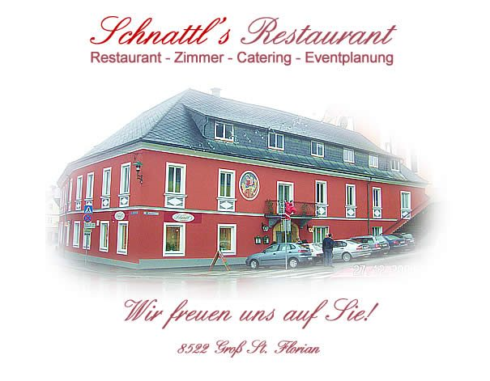

Früher Start
Ab 7 Uhr offen – Frühstück vor der Arbeit statt Kaffee im Auto.
Neu eröffnet
Das zweite Standbein des Hauses: Ab 7 Uhr gibt es Frühstück – für Frühaufsteher, Pendlerinnen, Handwerker und alle, die den Tag lieber am Tisch als in der eigenen Küche beginnen.

Mit dem Café-Restaurant Schnattl hat der Betrieb einen zweiten Ort eröffnet, an dem der Tag schon vor dem Mittagsgeschäft beginnt. Die Küche startet um 7 Uhr mit dem Frühstück – und läuft weiter als Café und Restaurant.
Damit deckt das Haus die ganze Tageskurve ab: Frühstück am Morgen, Mittagstisch, Kaffee am Nachmittag und am Abend das Restaurant mit Fisch- und Wirtshausküche.
Wofür sich das Café anbietet
Ab 7 Uhr offen – Frühstück vor der Arbeit statt Kaffee im Auto.
Kaffee, Kuchen und ein Platz zum Sitzenbleiben, mitten in Groß St. Florian.
Frühstücksrunden, Taufen am Vormittag oder das Beisammensein nach einem Termin – Anfragen nehmen wir gern entgegen.
Hinweis zur Vorschau: Zum Café-Restaurant liegen aus öffentlichen Quellen bisher nur Eröffnung und Frühstücksbeginn ab 7 Uhr vor. Karte, Preise und genaue Öffnungszeiten ergänzt das Haus in der Live-Version – erfunden wird hier nichts. Unter dem Namen Café Pub Schnattl ist der Betrieb zusätzlich auf Facebook präsent.